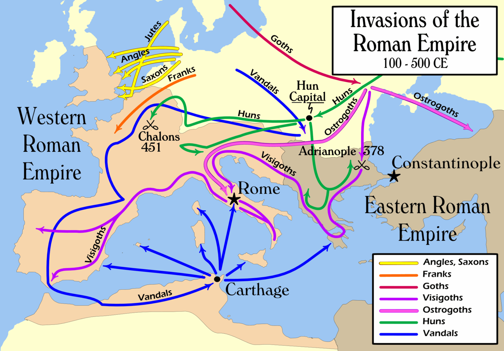

This map shows the multitude of invasions that the roman empire had to face in the
years surrounding 100-500CE. Often civilisations can come crumbling down then they are simply put into
direct competition with an more powerful and aggressive civilisation. Destruction of lands, cities, and
valuable strongholds can simply be enough to cause a civilisation to loose their control over a population
and simply collapse.